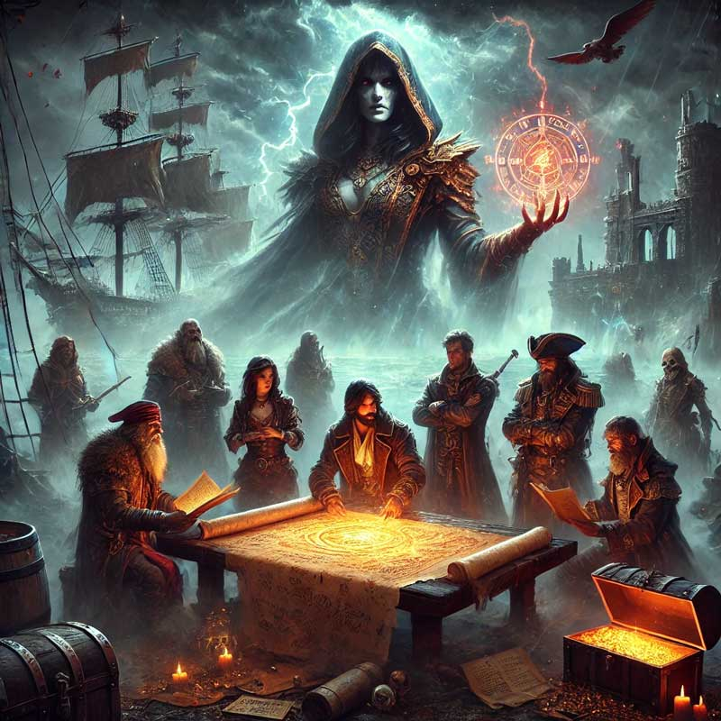
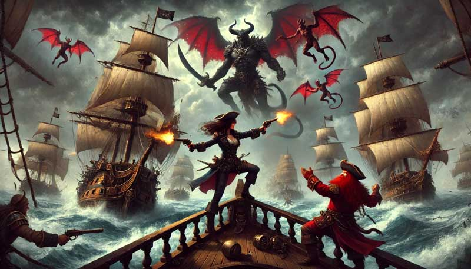

December 31, 2024
Storm on the Horizon

The smell of blood and spells still lingered in the air as the officers of the Scourge’s Bane surveyed their grim prize. The storm of battle had passed, but the true tempest loomed ahead. Blood and smoke marked their victory, but what they uncovered within the crumbling stronghold promised no respite.
Their search through the fort revealed treasures, plunder, and hidden compartments. Yet it was not the gold nor the rare trinkets that chilled them—it was the papers. Letters sealed with the infernal red of Cheliax, bearing the unmistakable hand of Admiral Thrune herself. Varen spread the documents across a cracked wooden table, reading aloud the damning words.
"Harrigan was the traitor," he murmured, his voice taut with disbelief. "Thrune’s puppet. The staged raids, the captured ships, all orchestrated to bolster Cheliax’s might in the Shackles." He let the final page fall, his piercing gaze meeting Kasmira’s. "And we were his primary target. Stealing the Wormwood painted a bullseye on our backs."
Finn let out a low whistle. "So much for retiring to a quiet port."
"Retire?" Red grunted, hefting his axe over one shoulder. "Not until we’ve buried this entire Chelish armada."
Their exploration unearthed one more enigma—a basin of clear, still water etched with arcane symbols. Varen’s sharp eyes narrowed as he examined it. “A scrying font,” he said, awe and caution mingling in his voice. Before the others could respond, the water stirred, spiraling upward. A figure emerged, her image forming in cruel clarity.
Admiral Thrune stood before them, her Chelish navy uniform crisp, her smile as sharp as the daggers concealed within her words. "So, these are the pests that have gnawed at Harrigan’s leash," she sneered. "Submit to Thrune, and perhaps I’ll find use for you. Refuse, and you’ll sink with the rest of the Shackles."
Finn smirked. "Pests? I’ve been called worse by better."
But Thrune’s laughter echoed, cold as iron chains, before the water exploded in a surge of magical energy. The basin shattered, leaving only silence and the stench of ozone. Kasmira wiped debris from her coat, one eyebrow arched. "What the hell was that?"
"A message," Varen replied grimly. "And a declaration of war."
The officers wasted no time. With the Scourge’s Bane and the captured Wormwood left to secure the fort, Varen gathered his companions. A few whispered incantations later, they stood before the grand villa of Tessa Fairwind in Quent. Tessa greeted them with a mix of curiosity and concern, her sharp eyes sweeping over their battle-worn forms.
After Kasmira recounted the events at Gannet Island, including the ominous encounter with Thrune, Tessa’s expression darkened. "We need to call an emergency council," she said, her voice steady despite the weight of her words. "The Free Captains must hear this."
Varen’s magic whisked them to Port Peril, where they sought an audience with the Hurricane King himself, Kerdak Bonefist. The wait was interminable, their frustration mounting as the minutes crawled by. When finally admitted, their arguments and evidence were met with Kerdak’s stony indifference.
"And how do I know this isn’t fabricated?" he growled, dismissing the damning letters with a wave of his hand. "You defeated Harrigan. Why sully his name further?"
Kasmira’s fury ignited. "You call this slander?" she spat. "Harrigan’s whip scars our backs—ask anyone here! These plans are real, and if you ignore them, you’ll doom the Shackles!"
Kerdak’s expression remained impassive. "The Eye of Abendego will tear their fleet to shreds before they reach us. We’ll defend our ports and destroy what’s left."
"They’re already through the Eye," Kasmira countered. But the Hurricane King’s mind was set. With a final dismissive gesture, he left, leaving the companions seething.
The following week dragged on as the Free Captains trickled into Port Peril. When the council finally convened, Kerdak repeated his stance, his voice rising above the protests. "Meeting the Chelish fleet in open waters is suicide! We’ll defend our ports, and that is final. Anyone who sails out to meet this fleet should be considered a traitor!"
But the murmurs of dissent began to swell, captains questioning Kerdak’s resolve. Kasmira seized the moment, her voice cutting through the discontent. "If Kerdak won’t act, someone must. The Chelish fleet won’t wait, and neither can we."
Tessa Fairwind stepped forward, her gaze blazing with determination. "I’ll follow you, Kasmira. I’ll pledge my ships to your cause. And if you succeed, I’ll support a claim for any one of you to seize the Hurricane Crown."
One by one, the voices of support rose. Arronax Endymion pledged his fleet, his booming voice a rallying cry. The Master of Gales, though weary, vowed to stand by their side. The tide had turned, and the companions were no longer isolated rebels—they were leaders of a growing resistance.
As the hall buzzed with urgency, Kasmira turned to her companions, her resolve hard as steel. "Get your ships ready. We sail to hunt a Chelish armada."
Outside, the winds howled like the roar of an angry sea, as if the Shackles themselves knew the storm that was coming.
January 4, 2025
The Battle for the Shackles

Rumors of war reached Kasmira de la Torre like the ominous whispers of an oncoming storm. The Chelish armada had finally emerged from the Eye of Abendego, a relentless force of warships and devils tearing through the Shackles with merciless precision. Drenchport fell first, a harrowing confirmation of the Master of Gales’ fears. The devils teleported into the city, spreading fiery devastation, while Chelish cannons sent the Shackles fleet to the depths. But Kasmira wasn’t one to mourn in inaction. Her fleet pulled anchor as soon as the grim news reached them, bound northward to intercept the Chelish forces before they reduced the Shackles to cinders.
Two days of tense sailing passed as Kasmira and her crew watched the distant towns fall through scrying spells. Arena, bereft of a defensive fleet, crumbled swiftly under Thrune’s assault. Chalk Harbor was next, attacked in the predawn hours of their second day at sea. The devastation was merciless, and Kasmira’s resolve hardened. By dawn, her fleet sailed toward the next target: Hell Harbor.
As they prepared to block Thrune’s advance, a lookout’s cry broke the morning stillness. “Ships ahoy! And a lot of them!” From the crow’s nest, the silhouette of the Chelish fleet loomed on the horizon. Kasmira’s voice cut through the rising tension. “Full sails! Hit them fast and hard!” At her command, the Master of Gales summoned a gale that hurled their ships forward, the wind itself heeding their call to battle.
The Chelish armada reeled in surprise, their warships scrambling to meet the Shackles fleet. As their vessels drew closer, Kasmira muttered to herself, “We’re outnumbered. And half their fleet is warships.” Her jaw tightened. “This won’t be easy.”
What followed was a clash of titans. Warships thundered with cannon fire, sending Shackles vessels to the ocean floor. Kasmira’s fleet, undeterred, executed precise maneuvers under her command. Jerrell and Pegsworthy’s squadrons encircled and annihilated a group of Chelish warships, while Red’s Revenge and Tidewater delivered crippling blows to another. Slowly, the tide turned. Shackles captains seized every opportunity, and as mutiny spread among the Chelish ranks, entire squadrons fled the fray.
The remnants of Thrune’s once-mighty armada faltered. Kasmira spotted the Chelish flagship, Abrogail’s Fury, still holding formation. A cry from the deck turned her attention skyward. “Devils incoming!” From the crow’s nest, Varen Galashantar’s musket echoed as he fired at the approaching creatures. But something felt wrong. The devils shimmered unnaturally, revealing themselves as illusions just as the true threat materialized on the deck in a burst of infernal magic.
The battle became chaos. Devils attacked with vicious precision. One dropped a feather token that halted the Scourge’s Bane mid-motion, throwing the crew off balance. Kasmira dodged an attack and fired her pistols, while Red’s axe cleaved through fiendish flesh. Varen’s musket sang from the crow’s nest, and Finn’s telekinetic blasts sent foes sprawling. Yet even as devils fell, one managed to grab Kasmira and fly away with her grasped in its clawed arms. Varen’s musket silenced the devil mid-flight, and Kasmira fell to the ocean. Varen, tossing the magic anchor feather token overboard, ordered the Bane forward, picking up Kasmira, fury burning in her eyes. “Take us to that ship!” she ordered, pointing at Abrogail’s Fury.
With Varen’s teleportation spell, the group materialized on the enemy flagship’s stern deck. There, Admiral Thrune awaited, flanked by a Hellknight and towering devils. The air turned heavy as the fiends unleashed magic, forcing water into their lungs. Kasmira and Red struggled to breathe, retching and fighting through the pain. Paralictor Valeria Asperixus, Thrune’s fearsome bodyguard, struck Kasmira with a bardiche, the Admiral of the Shackles barely dodging death.
Varen cast a spell, enlarging Red into a towering force of vengeance. Musket fire rained down on him, but the giant dwarf pressed forward, cutting through devils with his axe. Finn turned invisible, unleashing telekinetic blasts that sent marines sprawling. Varen, his musket precision unwavering, took down marines and fiends alike while conjuring a force wall to shield his allies from further musket fire.
The Hellknight’s relentless assault pressed Kasmira to her limits, but Varen’s spell turned her invisible, giving her a moment to recover. As the Shackles captains rallied, the tide turned once more. Finn’s magic weakened their foes, Red’s axe felled fiends, and Varen’s spells and musket ensured their enemies’ defeat. One by one, the devils and marines fell, leaving only Admiral Thrune. She tried to retreat, but Kasmira’s pistols fired the final shots, ending her reign of terror.
The battle was over. The Shackles fleet, battered but victorious, gathered to celebrate their triumph. The pirate lords hailed Kasmira and her companions as heroes, their unity and daring ensuring the freedom of the Shackles. Tessa Fairwind’s voice cut through the cheers, calling for new leadership to replace the complacent Hurricane King. The gathered captains echoed her sentiment, their eyes turning to the four offices of the Scourge’s Bane. The future of the Shackles hung in the balance, and destiny awaited.